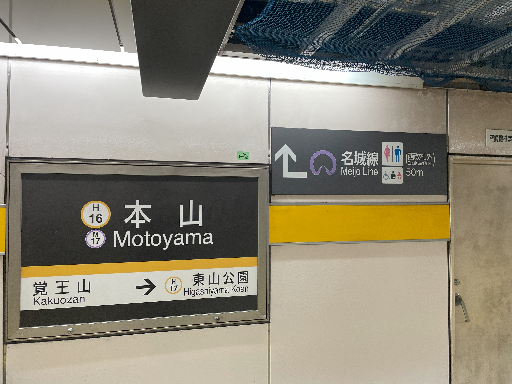

<1>本山駅から降りた瞬間
名城線へむかえ！！！！！！ 
↓
<2>階段をのぼれ！！！！
↓
<3>まだまだのぼれ！！！！ 名城線マークみっけた！！！ 名城線へむかえ！！！
↓
<4>広場でた！！！ いままで、名城線に向かっていったが、ここからは名城線には向かわず、右向け！！！ 出口1,4番出口へいけ！！
↓
<5>よっしゃあ！！！！ 改札外の向こう側にトイレマークみっけたな！！！
改札外にトイレあるから、駅員さんにいって改札外にでろ！！！！ ミッションコンプリート！！！！！ おつ！！！！！！！！！